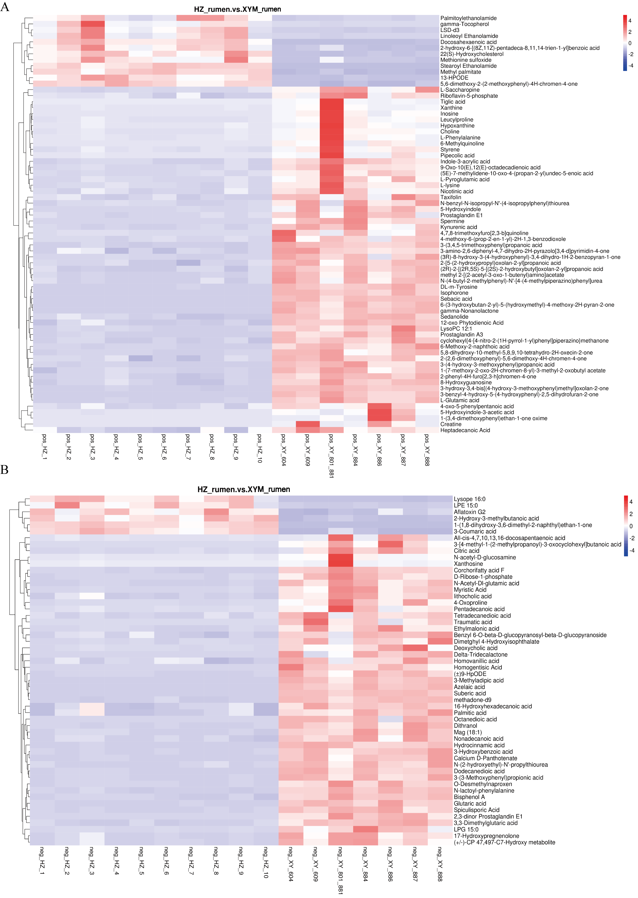
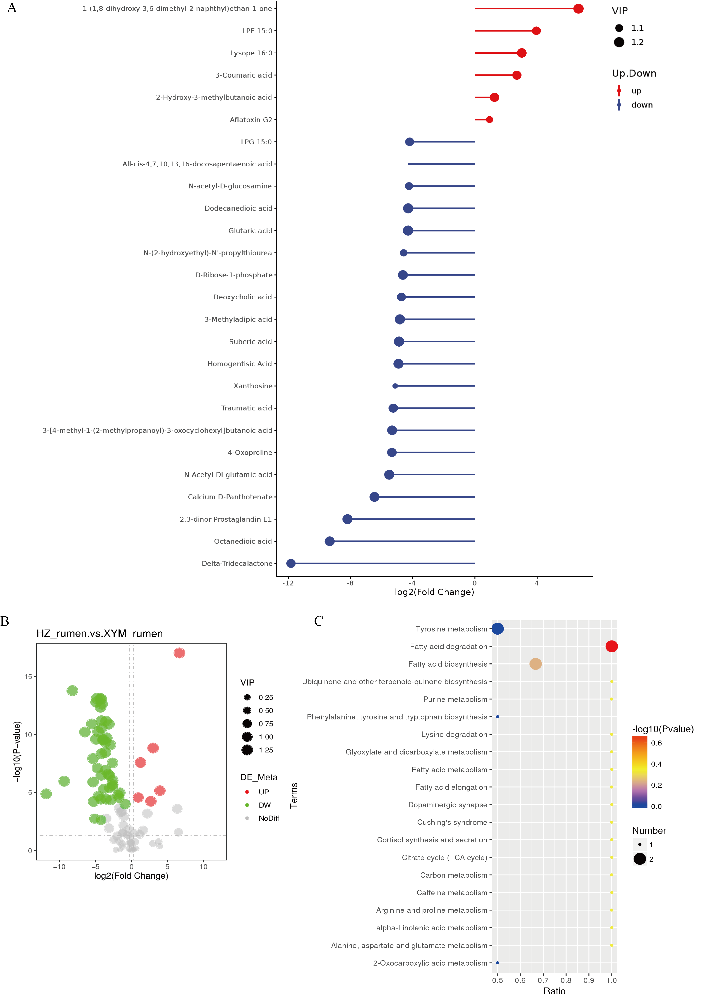

This is the metabolites data for XY Buffalo. You can download the data from the links below:
- Download XY Blood Negative Data
- Download XY Blood Positive Data
- Download XY Rumen Negative Data
- Download XY Rumen Positive Data

Correlation heat map of HZ (A) and XY (B) rumen metabolites in positive and negative ion mode

Analysis of differential metabolites between HZ and XYM in negative ion mode. (A) Multiples of metabolite differences between groups. The horizontal coordinate indicates that the difference multiples are all pairs with base 2. The ordinate indicates the differential metabolite code. (B) Volcanic map of differential metabolites. Each point represents a metabolite, the horizontal coordinate represents the change in the multiple of the group of contrasting substances (Log2), and the vertical coordinate represents the VIP value. Green represents down-regulation, red represents up-regulation, and gray represents metabolites that are detected but do not change significantly. (C) KEGG enrichment map of differential metabolites. The abscissa indicates enrichment, the ordinate indicates the path name, and the color of the point indicates P-value. The size of the points indicates the number of differentiated metabolites enriched.